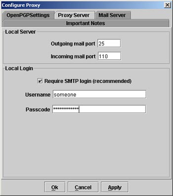
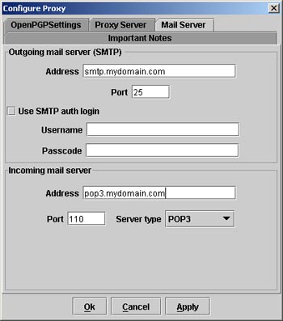
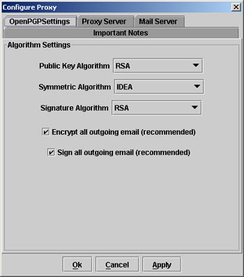
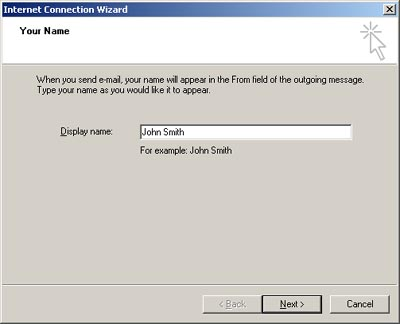
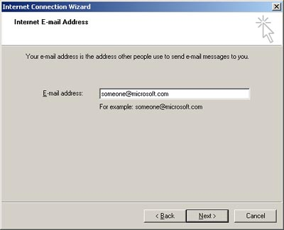
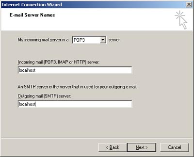
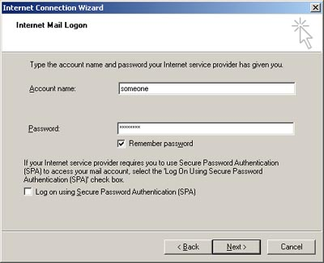
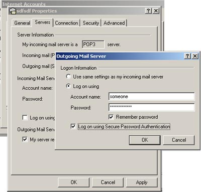
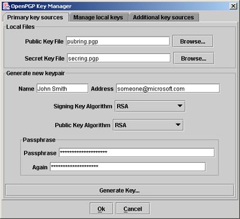

|
Oxford Brookes Secure Email Project
|
|
Userguide
- Introduction
- About this document
- What is the Secure Email Proxy
- Release Notes
- License Information
- Using the Secure Email Proxy
- Starting the Email Proxy
- Configuring the proxy
- Configuring your email client
- Generating a keypair
- Key Management
- Configuring primary key sources
- Generating a keypair
- Troubleshooting
- I have a key on my keyring, why can't the proxy
find it?
Introduction
About this document
What is the Secure Email Proxy
Release Notes
The current release notes and change log can be found here.
License Information
The Secure Email Proxy is released under the Gnu Public License (GPL). The
full license can be found here.
Using the Secure Email Proxy
Starting the Email Proxy
If you have downloaded the release JAR file, you can start the email proxy
by the following command:
java -jar SecureEmailProxy-xxxxxxx.jar
[options] [flags]
e.g. the command
java -jar SecureEmailProxy-1.0.0.jar
/?
Will display some useful help information.
Note: The Email Proxy is designed to be run locally on a per user basis and
currently is not designed to be installed as a multi-user server. The project
does have plans to release a server version in the not to distant future.
Configuring the proxy
Most configuration data is saved and loaded from a text configuration file
(by default called "EmailProxy.dat").
You can either modify these settings using a text editor or by using the Email
Proxy GUI (recommended).
A list of available configuration settings and their default values can be
found here.
-
Configure the proxy. You must configure the ports the
proxy will listen for your mail client on, see below.
- By default the proxy requires a SMTP AUTH connection for security reasons.
You should enter a user name and password. Note that this is for the PROXY
only, to use this option your mail server DOES NOT have to support SMTP AUTH
logins (but your mail client must). For security reasons it is STRONGLY RECOMMENDED
that you keep this option enabled if you are running on a multi-user operating
system like UNIX.

- Enter the details of the actual mail server. If your mail server
requires an SMTP AUTH login, enter this information as well (most servers
don't require this).

- Configure your encryption algorithm preferences.

Configuring your email client
The steps shown here show how to configure Outlook Express to use the proxy.
The steps will be pretty much the same in other email clients. I have assumed
that you have already got an email address from your ISP (note, you can not
use the proxy with web based email systems such as Hotmail).
- If you haven't already done so, start Outlook Express and create a new email
account ("tools--> Accounts...", "Add-->Mail...").
- Enter your user name and email address (note, you should use the same name
and address that you used to generate your key pair).


- In the incoming and outgoing mail server section enter the name "localhost",
see below.

- Enter your mail server user and password information.

- If you have configured the proxy to listen to a port other than the default,
you will have to tell your mail client to connect to localhost using a different
port.
- If you have enabled proxy server SMTP AUTH logins (see
above) you should enter the login and password information into the mail
client.

Key Management
Configuring primary key sources

When the proxy looks for a public or a private key, it will search
the local key file first. The local files are where keys generated by the proxy
(below) are stored.
Generating a keypair
- Enter your user id and address (the same information as you entered in the
previous section).
- Enter your algorithm preferences.
- Enter a passphrase. This should be fairly long but easy for you to remember.
It is strongly recommended that you don't use the same passphrase as you entered
anywhere else.
Troubleshooting
I have a key on my keyring, why can't the proxy
find it?
The email proxy uses the name and email address of the sender and recipients
stored in the actual email to find the corresponding key in the keyring.
This search is case sensitive.
So, for example, if your signing key has the ID of "Joe
Bloggs <joe@example.com>" your ID and email address must be
specified as "Joe Bloggs" and "joe@example.com" respectively
in your mail client.
Likewise, recipient names and addresses in your address book must be the same
as the recipients name and addresses in their public keys.
Copyright 2002 The Oxford Brookes University, Secure Email Project.
http://secemail.brookes.ac.uk